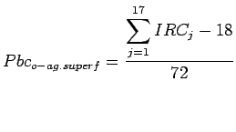
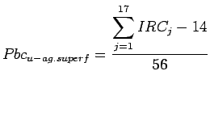
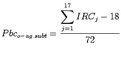
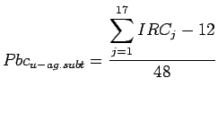
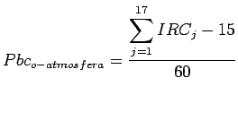
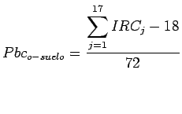
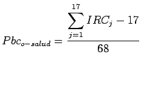
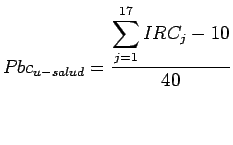

Las variables asociadas al cálculo de la Probabilidad de Contaminación de los diferentes elementos del medio se han agrupado en dos subconjuntos: los relacionados con la explotación y diseño de la instalación y los relacionados con su ubicación. Con la finalidad de analizar si el problema fundamental de un punto de vertido es su explotación y/o ubicación, se va a definir la Probabilidad de Contaminación relacionada con la explotación u operación del punto de vertido (Pbc) y la Probabilidad de Contaminación relacionada con la ubicación (Pbc). Su formulación es igual a la indicada en la expresión 2.13 pero en ella sólo se tendrán en cuenta las variables de cada subconjunto.
Las Probabilidades de Contaminación relativas a la explotación y ubicación del punto de vertido, para cada elemento del medio son las siguientes:
|  | (2.16) |
|  | (2.17) |
|  | (2.18) |
|  | (2.19) |
|  | (2.20) |
| (2.21) |
|  | (2.22) |
| (2.23) |
|  | (2.24) |
|  | (2.25) |